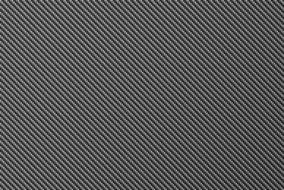
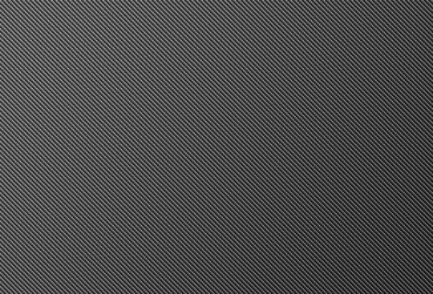
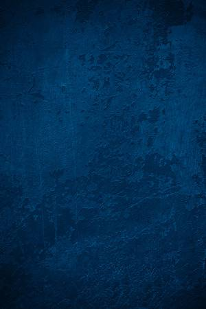
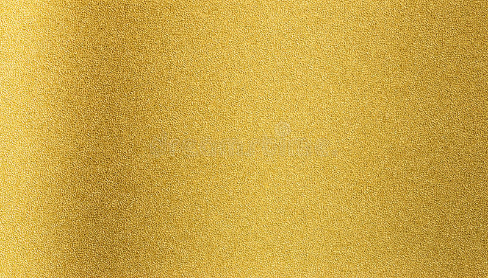
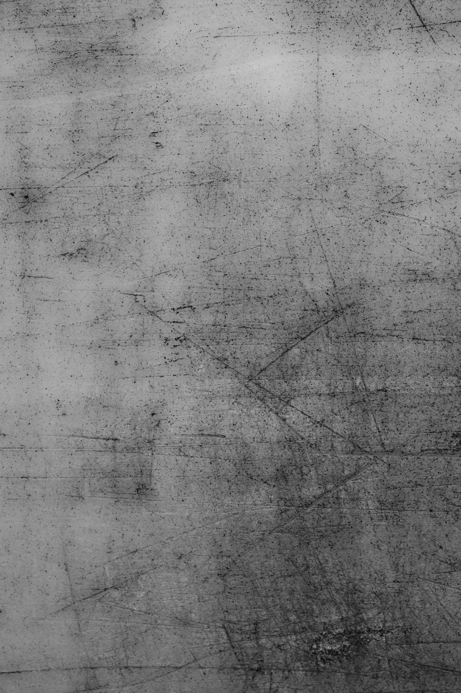
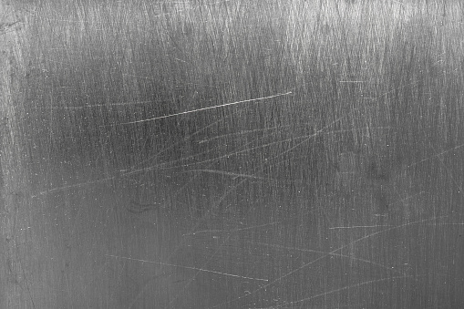
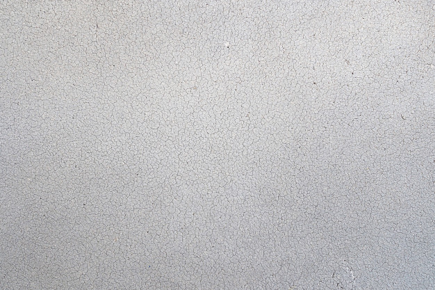
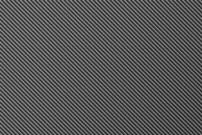
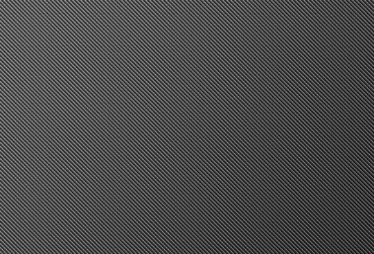
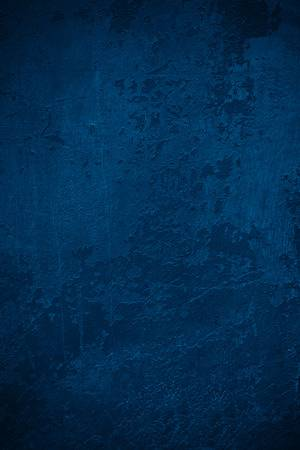
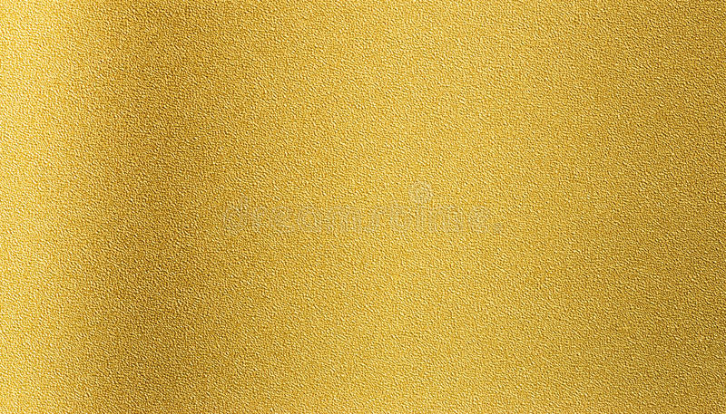
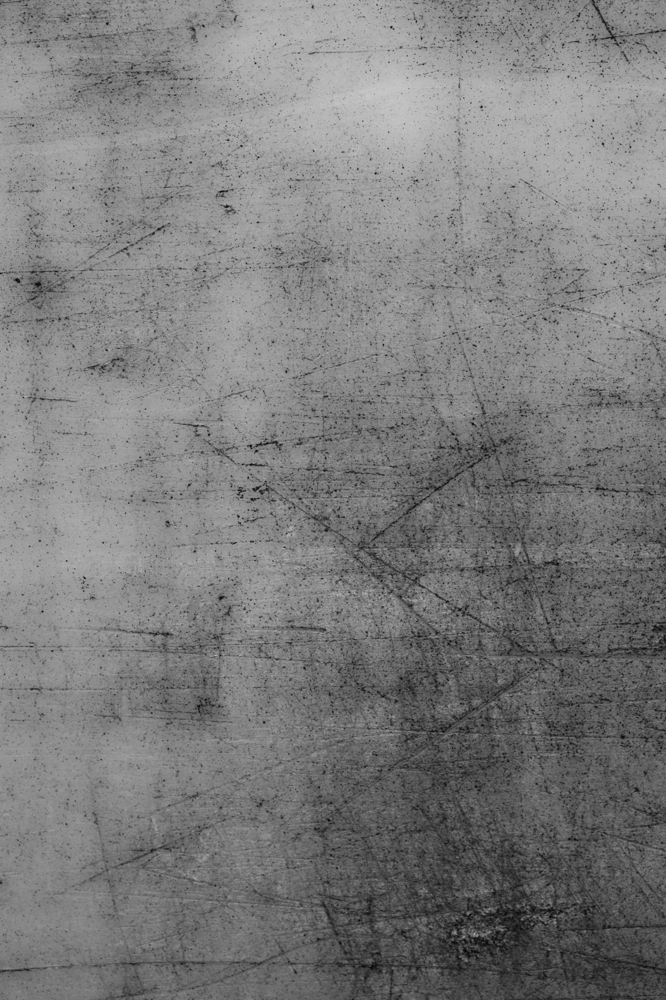
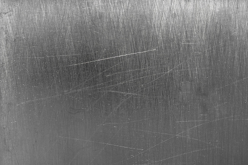
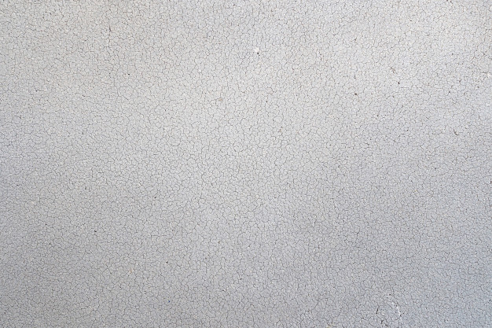
With this tool you can configure your personal robot end effector.
Use the mouse and the scroll wheel to move inside the scene. Use the arrow keys to change the camera framing. With the customization menu you can configure all the options of the robot of your dreams, starting from the number of fingers up to the appearance of each component. You can preview how the robot will behave with some sample animations.
Remember to toggle the audio with the button below for a better user experience!
Number of fingers: 2
Number of phalanges: 1
Scale phalanx length: 100%
Scale tip length: 100%
| Palm material: | |
| Pivot material: | |
| Finger material: |